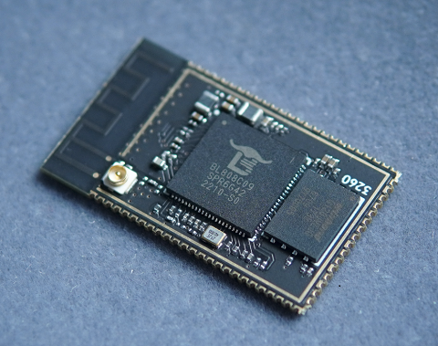

中文
中文M1s 模组
2022-11-09
更新历史
| 日期 | 版本 | 作者 | 更新内容 |
|---|---|---|---|
| 2022-11-09 | v0.2 | wonder |
|
| 2022-10-18 | v0.1 | wonder |
|
模组概述
Sipeed M1s 模组是基于博流智能科技的 BL808 芯片所设计的一款 AIOT 模组，主控芯片包含三个核心，具有 WiFi/BT/BLE/Zigbee 等无线互联单元，包含多个 CPU 以及音频编码译码器、视频编码译码器和 AI 硬件加速器（BLAI-100），适用于各种高性能和低功耗应用领域。
购买链接：淘宝
模组特点
- 主芯片 BL808 RV64 480MHz + RV32 320MHz + NPU BLAI 100GOPS
- 板载 SPI FLASH（默认 16MByte）
- 支持 2.4G WIFI / BT / BLE
- 支持 IPEX 一代天线座子和 PCB 板载天线
- 邮票孔引出所有 IO
模组参数
| M1s 模组 | |
|---|---|
| 主控 BL808 处理器 | |
| 三核异构RISC-V CPUs： · RV64GCV 480MHz · RV32GCP 320MHz · RV32EMC 160MHz |
|
| AI NN 通用硬件加速器： · BLAI-100 用于视频/音频检测/识别，100GOPS 算力 |
|
| 内置 768KB SRAM + 64MB UHS PSRAM | |
| 编解码： - MJPEG and H264(Baseline/Main) - 1920x1080@30fps + 640x480@30fps |
|
| 接口： - 摄像头接口 ：DVP 和 MIPI-CSI - 显示接口：SPI、DBI、DPI(RGB) |
|
| 无线： - 支持 Wi-Fi 802.11 b/g/n - 支持 Bluetooth 5.x Dual-mode(BT+BLE) - 支持 Wi-Fi / 蓝牙 共存 |
|
| USB 2.0 HS OTG | |
| 板载部件 | |
| 板载 SPI FLASH（可选容量） | |
| 支持 IPEX 一代天线座子和 PCB 板载天线 | |
| 其他说明 | |
| 尺寸：31mm (L) x 18mm (W) | |
| 3D 模型文件下载：点击跳转 | |
| 外部供电需求： VDDIO4/VDDIO3/VDDIO1/ 和 3V3 这几路电源必须给模块提供才能正常工作 |
|
| 温升: <30K | |
| 工作温度范围:-10℃ ~ 65℃ | |
主控核心
三核异构 M0，D0，LP。
| M0 | D0 | LP |
|---|---|---|
| 平头哥 E907@320MHz | 平头哥 C906@480MHz | 平头哥 E902@160MHz |
引脚分布
前往原理图查看：点我
产品对比
| 项目 | M1(K210) | M1s(BL808) | ESP32-S3-WROOM-N16R8 |
|---|---|---|---|
| CPU | RV64@400MHz x2 | · RV64GCV@480MHz · RV32GCP@320MHz · RV32EMC@160MHz |
Xtensa LX7@240MHz x2 |
| RAM | 8MB SRAM | · 768KB SRAM · 64MB UHS PSRAM(2000MHz) |
· 512KB SRAM · 8MB PSRAM |
| Flash | 16MB | 16MB | 16MB |
| OS | · FreeRTOS · No-mmu Linux |
· FreeRTOS · Linux |
RTOS |
| NPU | 230GOPS with limited OPS | 100GOPS with rich OPS | |
| Camera | DVP, up to VGA | MIPI + DVP, up to 1080P h264 | DVP |
| Display | · SPI · 8bits MCU LCD |
· SPI · 8bits MCU LCD · RGB LCD |
· SPI · 8bits MCU LCD |
| Audio | I2S | · I2S · Analog Audio Input/Output |
I2S |
| Wireless | WIFI+BLE+Zigbee | WIFI + BLE | |
| USB | USB2.0 OTG HS | USB1.1 OTG | |
| Accelerator | FFT | · Scaler · OSD · MJPED · G2D · H264 |
|
| Perpheral | UART, SPI, IIC | UART, SPI, IIC, SDIO ETH(RMII), ADC/DAC | UART, SPI, IIC, SDIO, ADC |
| Size | 25.4 x 25.4 mm | 31 x 18 mm | 25.5 x 18 mm |
| Price | $6 | $6 | $4.3(digikey) |
软件描述
| M1s 模组 | |
|---|---|
| OS | · 完备支持FreeRTOS · 基础支持Linux |
| 开发方式 | · 原生C SDK · MaixHAL C 模块 · PikaPython |
| 固件下载 | · 串口下载 · 虚拟磁盘拖拽式更新 |
| AI 推理框架 | · 支持原生SDK的BLAI加速推理引擎 · 支持通用TinyMaix推理引擎 |
| AI 模型下载 | · MaixHub 下载。支持 人脸检测，识别，姿态检测，手势检测 等 |
| Sipeed 参考示例 | · https://gitee.com/sipeed/M1s_BL808_example |
支持算子列表
| Type | Operators | Applicable Subset Spec. | Processor |
|---|---|---|---|
| Convolution | Conv | Kernel: 1x1,3x3,5x5,7x7 | :strong:NPU |
| Stride: 1x1, 2x2 | |||
| Dilation: 1x1, 2x2 | |||
| Pad: same | |||
| Depthwise Conv | Kernel: 1x1,3x3 (5x5, 7x7 TBD) | :strong:NPU |
|
| Stride: 1x1, 2x2 | |||
| Dilation: 1x1 (2x2 TBD) | |||
| Pad: same | |||
| Transpose Conv | Kernel: 3x3 | strong:NPU |
|
| Stride: 2x2 | |||
| Pooling | MaxPool (NPU TBD) | Kerenl: 2x2 | DSP |
| Stride: 2x2 | |||
| MaxPool | Kerenl: 3x3 | :strong:NPU |
|
| Stride: 1x1, 2x2 | |||
| Activation | Relu | :strong:NPU |
|
| Relu 6 | :strong:NPU |
||
| Other processing | BatchNormalization | fused with conv | :strong:NPU |
| Add (shortcut) | :strong:NPU |
||
| Concat (route) | Channel wise (AXIS 3 in BHWC) | :strong:NPU |
|
| Fully Connected | :strong:NPU |
||
| Upsample | Nearest | :strong:NPU |
模组资料
- 模组规格书
- 模组原理图
- 模组封装库
- 模组点位图
- 模组尺寸图
- 3D 模型文件
- 模组芯片数据手册
- 博流官方文档
- BL808 数据手册 (gitee)
- BL808 参考手册 (gitee)
- Sipeed SDK (gitee)
- Sipeed Examples（gitee）
- Bouffalolab SDK（Github）
- Linux SDK（Github）
- 交流 QQ 群：
592731168。点我加群 - 论坛：bbs.sipeed.com
- 在线模型平台
注意事项
| 项目 | 注意事项 |
|---|---|
| 静电防护 | 请避免静电打到 PCBA 上；接触 PCBA 之前请把手的静电释放掉 |
| 容忍电压 | 每个 GPIO 的工作电压已经在原理图中标注出来，请不要让 GPIO 的实际工作的电压超过额定值，否则会引起 PCBA 的永久性损坏 |
| FPC 座子 | 在连接 FPC 软排线的时候，请确保排线无偏侈地完整地插入到排线中 |
| 插拔 | 请完全断电后才进行插拔操作 |
| 避免短路 | 请在上电过程中，避免任何液体和金属触碰到 PCBA 上的元件的焊盘，否则会导致路，烧毁 PCBA |
| 设计建议 | 为该模组设计底板时，建议先看这个帖子 https://bbs.sipeed.com/thread/1721 |
| BANK 划分 |
VDDIO1：GPIO 0-8，1.8V/3.3V VDDIO2：GPIO 11-15，GPIO 40-41, 3.3V only VDDIO3：GPIO 16-23，1.8V/3.3V VDDIO4：GPIO 24-39，1.8V/3.3V |
| BOOT 模式选择 |
在启动时，芯片判定 BOOT 引脚的电平，选择两个启动选项之一 · BOOT 高电平：从 FLASH 存储启动 · BOOT 低电平：进入串口下载模式 |
联系方式
M1s 模组可以在多种场景实现客户不同方面的需要，技术支持和商业合作请联系邮箱 support@sipeed.com